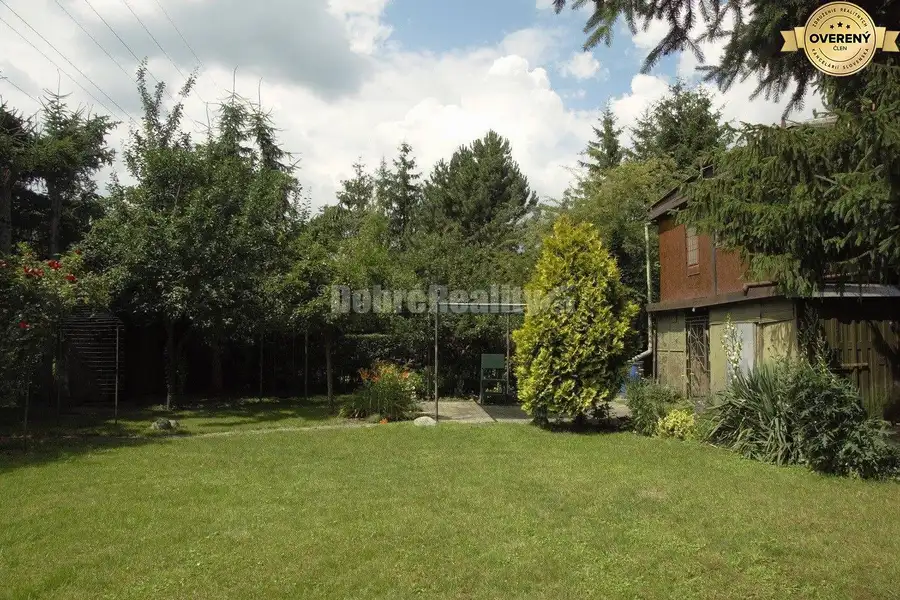
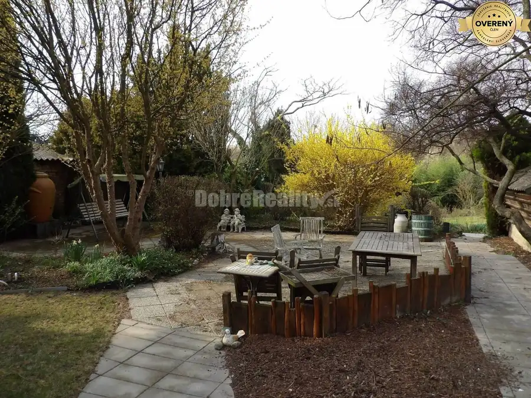
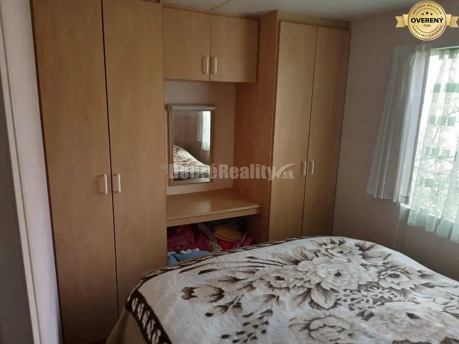

Podnikateľský objekt s perspektívou na PREDAJ
Váhovce
- Dispozícia5-izbový
- Plocha337 m²
- Poschodie1.
- Stavčiastočne prerobený
- Vlastníctvoosobné
O nehnuteľnosti
Realitná kancelária DOBRÉ REALITY s r. o. ponúka na predaj podnikateľské priestory v obci Váhovce (okres Galanta). Rozsiahly objekt sa nachádza na Hlavnej ulici s veľmi dobrou dostupnosťou. Budova je ideálna podnikanie v gastro službách alebo ju budúci majiteľ môže zrekonštruovať a využívať na bývanie.
Ponúkaný objekt pozostáva z hlavnej prízemnej budovy, do ktorej sa vstupuje z ulice a disponuje aj zadným vchodom. Nachádza sa v nej viacero miestností - sklad, kuchyňa, sociálne zariadenie, väčšia spoločenská miestnosť. Objekt je oplotený, súčasťou nádvoria je prístavba so zastrešenou terasou. Budovy sú napojené na inžinierske siete- voda, plyn, elektrina. Bonusom je veľmi dobrá poloha objektu (pri hlavnej ceste), bezbariérový vstup a blízkosť vodnej nádrže Kráľová v rámci relaxu.
Dispozičné riešenie
1. Budova 220 m2
2. Budova 117 m2
3. Dvor 426 m2
Vzdialenosti
Váhovce-Sereď: 5,6km
Váhovce-Galanta: 12 km
Váhovce-Trnava: 22 km
Váhovce-Nitra: 34km
Váhovce-Bratislava: 64 km
Cena ponúkaného objektu: 215 534€ vrátane kompletného realitného a právneho servisu
V prípade záujmu ma, prosím, kontaktujte na mob. č.: alebo e-mailom:
Nech sa páči, tu sa o mne dozviete viac: https://profilmaklera.sk/bc-zlatica-gregorova/
Dobré Reality klientom poskytujú komplexné služby realitného sprostredkovania a celoslovenskú internetovú inzerciu. Už viac ako 10 rokov nám dôverujú tisícky klientov.
Hľadáme nových kolegov a ponúkame najvýhodnejšie podmienky! K nášmu tímu profesionálnych obchodníkov s nehnuteľnosťami sa môžete pridať na: dobrereality.sk/kariera
Parametre
| Zastavaná plocha | 763 m² |
|---|---|
| Úžitková plocha | 337 m² |
| Poschodie | 1 |
| Počet izieb | 5 |
| Vlastníctvo | osobné |
| Stav | čiastočne prerobený |
| Odvoz odpadu | áno |
| El. napätie | nie |
| Plyn | áno |
| Internet | nie |
| Kúpeľňa | nie |
| Vykurovanie | vlastné |
| Terasa | áno |
| Parkovanie | vnútorné |
| Postavené z | tehla |
| Zariadenie | čiastočne |
| Zateplený objekt | nie |
| Klimatizácia | nie |
| Káblová televízia | nie |
| Energetický certifikát | nie |
| Predzáhradka | áno |
| Bezbariérový prístup | nie |
| Okná | plastové |
| Prístupová cesta | asfaltová cesta |
| Dátum zverejnenia | 12. 3. 2025 |
Kde to je
Mohlo by Vás zaujímať

Chaty a chalupy10 55 000 €DOBRÉ REALITY - Sympatická rekreačná chatka so záhradou na predaj Šoporňa 3-izbový16 m² Realitná kancelária DOBRÉ REALITY s r. o. ponúka na predaj rekreačnú chatku so záhradou. Nehnuteľnosť sa nachádza v katastrálnom území obce Šoporňa,…
Rodinné domy10 219 000 €Pôvabný domček s očarujúcou záhradou na PREDAJ Šalgočka 5-izbový150 m² Realitná kancelária Dobré Reality s r. o. ponúka na predaj vidiecky domček s očarujúcou záhradou. Nehnuteľnosť sa nachádza v intraviláne obce…
Pozemok10 154 500 €Parádny pozemok s mobilným domom na predaj Sereď 3700 m² Realitná kancelária DOBRÉ REALITY s r. o. dáva Vám do pozornosti vynikajúcu ponuku. V meste Sereď, okr. Galanta si môžete za príjemnú sumu zaobstarať…